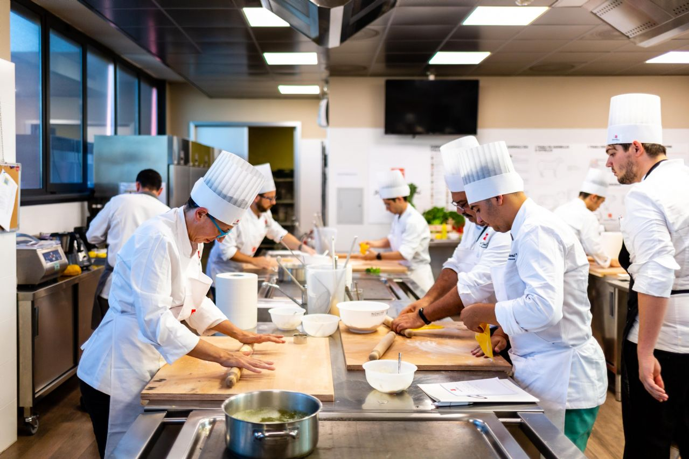

Benvenuti al "Coffehouse," un incantevole ristorante rustico situato ai piedi delle maestose montagne. La sua storia inizia molti anni fa quando Anna, una giovane chef appassionata, decide di realizzare il suo sogno di aprire un ristorante che celebri la cucina casalinga e autentica. Anna proviene da una famiglia di contadini, e la sua passione per la cucina è cresciuta tra i profumi dei campi e gli aromi della cucina tradizionale. Decisa a condividere questa passione con il mondo, ha acquistato un antico casolare di pietra e lo ha trasformato in un accogliente ristorante. Il "Coffehouse" si distingue per il suo ambiente accogliente e la cucina preparata con ingredienti freschi e locali. Il menù è ispirato alla tradizione culinaria della regione, con piatti come zuppa di lenticchie, gnocchi fatti in casa e arrosti di carne cotta lentamente. Il personale del ristorante è composto da un gruppo di persone appassionate di cibo e ospitalità. Il simpatico cameriere, Marco, ha una conoscenza approfondita del menù e ama consigliare i piatti migliori in base ai gusti dei clienti. La giovane cuoca di pasticceria, Sofia, è famosa per i suoi dolci fatti in casa, come la torta di mele e la crostata di fragole. Il "Coffehouse" è anche noto per la sua selezione di caffè proveniente da tutto il mondo. Il barista, Luca, è un esperto nel preparare caffè artigianale e ama raccontare la storia di ogni chicco di caffè servito nel ristorante. Il ristorante è diventato un punto di ritrovo per la comunità locale, con eventi settimanali come serate a tema, concerti acustici e degustazioni di vini locali. La calda atmosfera e l'attenzione ai dettagli fanno sì che ogni visita al "Coffehouse" sia un'esperienza unica. La storia del "Coffehouse" continua a evolversi, con nuovi piatti stagionali e eventi speciali che mantengono vivo lo spirito di questo ristorante rustico e affascinante.
